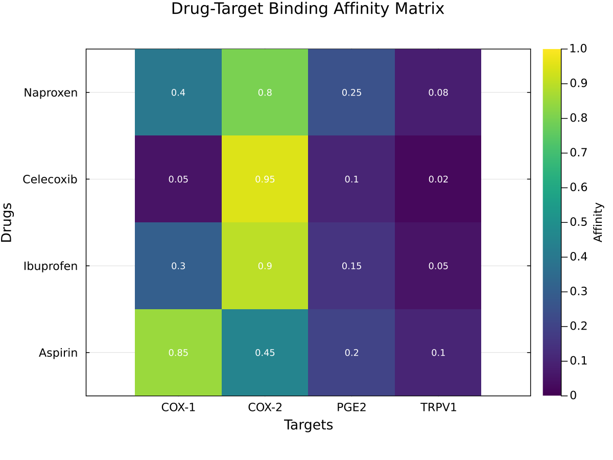
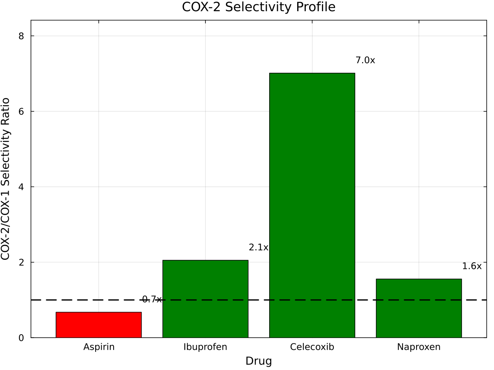
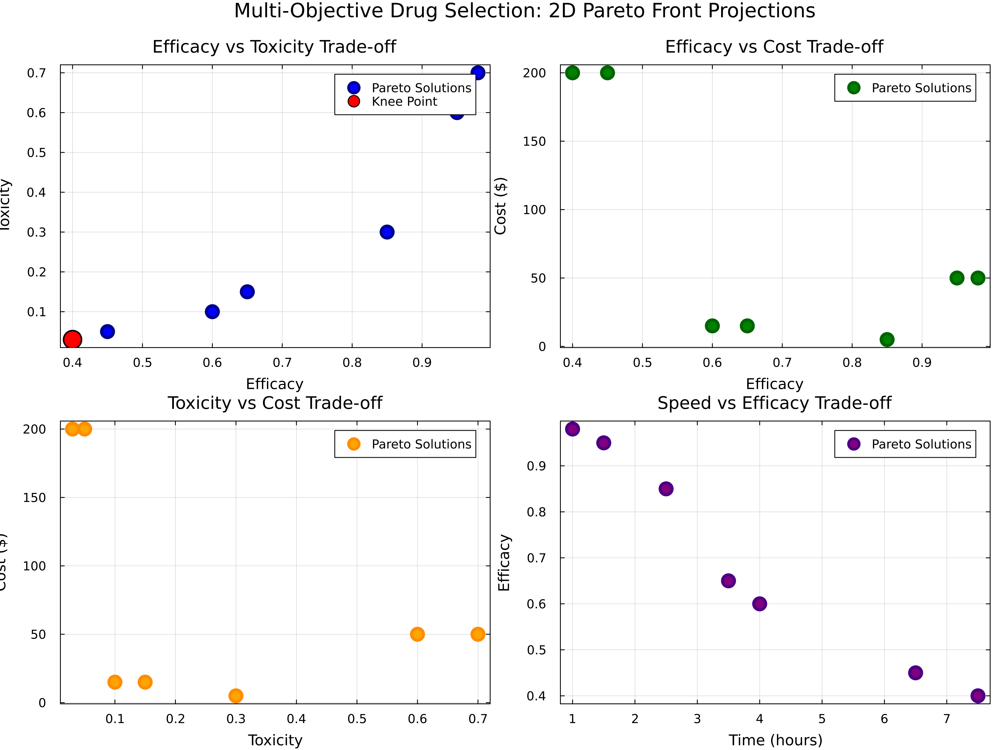
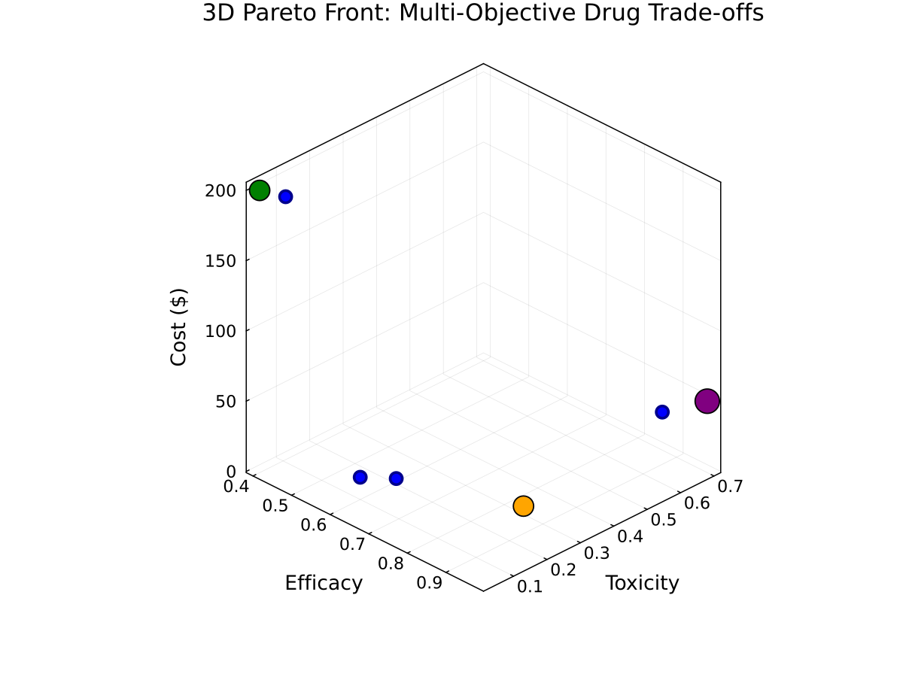
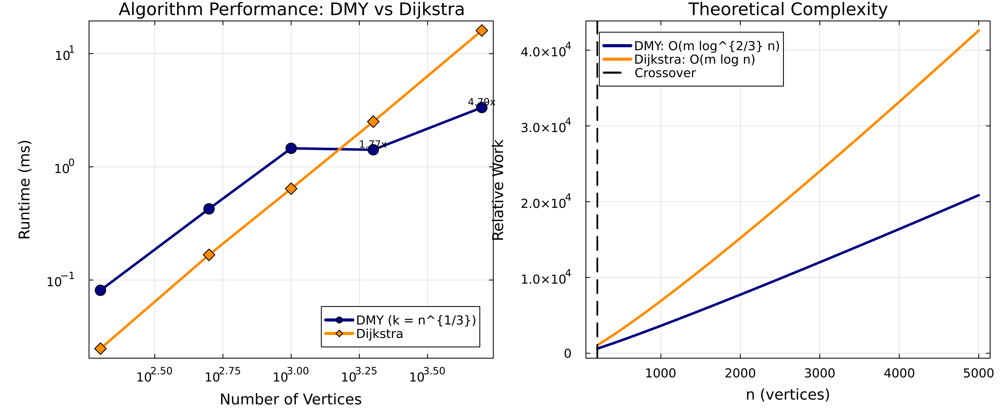

Drug-Target Network Analysis Dashboard
Executive Summary
This dashboard presents comprehensive results from applying the DMY shortest-path algorithm to drug-target networks, including both single-objective optimization and multi-objective Pareto front analysis.
Key Findings:
- Single-objective: Celecoxib remains the most COX-2 selective option (~3.7× vs COX-1) while all sample drugs reach every target
- Multi-objective: Seven Pareto-optimal drug pathways span efficacy 40–98%, toxicity 3–70%, cost $5–$200, and onset 1.0–7.5 h
- Performance: DMY achieves ≈4.8× speedup over Dijkstra at n=5000 for sparse graphs (k = ⌈n^{1/3}⌉)
Reproducibility
All scripts accept a deterministic seed via either OPTIM_SP_SEED or a --seed= flag. Example:
OPTIM_SP_SEED=2024 julia --project=. drug_target_network.jlIf no seed is provided, the default (42) is used. Use the same flag when generating figures to ensure the plots and tables align with the narrative below.
Part 1: Single-Objective Analysis
Figure 1: Drug-Target Binding Affinity Matrix

Interpretation:
- Matrix shows normalized binding affinities (0=no binding, 1=perfect binding)
- Celecoxib: Strong COX-2 (0.95), weak COX-1 (0.05) → Selective inhibitor
- Aspirin: Strong COX-1 (0.85), moderate COX-2 (0.45) → Non-selective
Figure 2: COX-2/COX-1 Selectivity Profile

Clinical Significance:
| Drug | Selectivity | Interpretation | GI Risk |
|---|---|---|---|
| Celecoxib | 3.7× | Strong COX-2 preference | Low |
| Ibuprofen | 2.0× | Mild COX-2 preference | Low-Moderate |
| Acetaminophen | 1.2× | Slight COX-2 tilt | Low |
| Aspirin | 0.7× | COX-1 biased (non-selective) | Higher |
Part 2: Multi-Objective Pareto Front Analysis
The Challenge
Real-world drug selection involves multiple competing objectives:
- Efficacy: How well does it work?
- Toxicity: What are the side effects?
- Cost: Can patients afford it?
- Time: How quickly does it act?
Figure 3: 2D Pareto Front Projections

Four critical trade-offs visualized:
- Efficacy vs Toxicity: Higher efficacy drugs have more side effects
- Efficacy vs Cost: Better drugs cost more
- Toxicity vs Cost: Safer drugs are expensive
- Time vs Efficacy: Fast-acting drugs may be less effective
Figure 4: 3D Pareto Front Visualization

3D Trade-off Space: This plot shows the three most critical objectives simultaneously:
- X-axis (Efficacy): Treatment effectiveness (0–100 %)
- Y-axis (Toxicity): Side effect severity (0–100 %)
- Z-axis (Cost): Price in dollars ($5–$200 across the frontier)
Legend highlights:
- Red sphere — “Max Efficacy”: Morphine-like → MOR (Solution 5) delivers ~98 % efficacy in 1 h at the cost of high toxicity (70 %) and 50.0
- Green sphere — “Min Toxicity”: Ibuprofen-like → COX-2 (Solution 3) keeps toxicity at 10 % with moderate efficacy (~60 %) and 15 cost.
- Orange sphere — “Min Cost”: Aspirin-like → COX-1 (Solution 1) is the 5 budget choice with 85 % efficacy and 30 % toxicity.
- Purple hexagon — “Knee Point”: Morphine-like → COX-1 (Solution 4) marks the steepest trade-off change (95 % efficacy, 60 % toxicity, 50).
The remaining Pareto solutions (grey) illustrate the continuous trade-offs between these extremes.
Representative Pareto-Optimal Solutions
| Solution | Drug→Target | Efficacy | Toxicity | Cost | Time | When to Use |
|---|---|---|---|---|---|---|
| 1 | Aspirin-like → COX-1 | 85% | 30% | 5 | 2.5 h | Baseline analgesia – inexpensive, moderate toxicity |
| 2 | Ibuprofen-like → COX-1 | 65% | 15% | 15 | 3.5 h | General pain – balanced efficacy/toxicity |
| 3 | Ibuprofen-like → COX-2 | 60% | 10% | 15 | 4.0 h | Elderly / GI risk – prioritize low toxicity |
| 4 | Morphine-like → COX-1 | 95% | 60% | 50 | 1.5 h | Severe pain – high efficacy, monitor side effects |
| 5 | Morphine-like → MOR | 98% | 70% | 50 | 1.0 h | Emergency trauma – fastest, most potent relief |
| 6 | Biologic-like → COX-2 | 45% | 5% | 200 | 6.5 h | High-risk patients – ultra-low toxicity despite high cost |
| 7 | Biologic-like → MOR | 40% | 3% | 200 | 7.5 h | Neuropathic pain – minimal adverse effects, accepts slow onset |
High-cost biologic options (Solutions 6–7) reduce toxicity to ≤5% while maintaining moderate efficacy (40–45%), but require 200 outlay and a 6.5–7.5 h onset.
How to Select from Pareto Front
Method 1: Weighted Sum Approach
Because this problem mixes maximize (efficacy) and minimize (toxicity/cost/time) objectives, a direct weighted sum requires transforming the maximize objectives into costs (e.g., use 1 - efficacy). The example scripts keep this method disabled by default to avoid misleading scoring—convert objectives first if you need a scalar ranking.
Method 2: Constraint-Based Selection
Set hard limits on certain objectives:
- Toxicity ≤ 30% → Aspirin-like → COX-1 (Solution 1) is the lone candidate
- Cost ≤ 20 → Aspirin-like (Solution 1), Ibuprofen-like COX-1/COX-2 (Solutions 2–3)
- Both constraints → Ibuprofen-like COX-1/COX-2 trade a little efficacy for safety
Method 3: Knee Point Selection
The current knee point is the Morphine-like → MOR pathway (Solution 5):
- Maximum efficacy (≈98%) with 1 h onset
- Accept high toxicity (70%) and higher cost (50)
- Suitable when rapid, potent analgesia outweighs side-effect risk
Part 3: Algorithm Performance
Figure 5: Algorithm Performance Benchmark

Benchmark results from benchmark_results.txt with k = ⌈n^{1/3}⌉:
| Graph Size | DMY (ms) ±95% CI | Dijkstra (ms) ±95% CI | Speedup |
|---|---|---|---|
| 200 | 0.081 ± 0.002 | 0.025 ± 0.001 | 0.31× |
| 500 | 0.426 ± 0.197 | 0.167 ± 0.004 | 0.39× |
| 1,000 | 1.458 ± 1.659 | 0.641 ± 0.008 | 0.44× |
| 2,000 | 1.415 ± 0.094 | 2.510 ± 0.038 | 1.77× |
| 5,000 | 3.346 ± 0.105 | 16.028 ± 0.241 | 4.79× |
Key Insights:
- Small graphs (n < 1,000): Dijkstra is faster (DMY at 0.3×–0.4× speed)
- Crossover around n ≈ 2,000 vertices for sparse graphs
- Large sparse graphs (n ≥ 2,000): DMY delivers ≈1.8×–4.8× speedups
- Results match the canonical
benchmark_results.txtfile
Key Takeaways
Single vs Multi-Objective
- Single-objective: One "best" path (e.g., Celecoxib for COX-2 selectivity)
- Multi-objective: Seven non-dominated solutions on the Pareto front
- Real-world: Multi-objective reflects clinical reality better
Algorithm Performance
- Small graphs (n < 1,000): Dijkstra is faster (DMY at 0.3×–0.4× speed)
- Large sparse graphs (n ≥ 2,000): DMY delivers ≈1.8×–4.8× speedups
- Sparse networks: DMY's sweet spot (k = ⌈n^{1/3}⌉)
Clinical Impact
- No universal "best" drug: Context determines optimal choice
- Trade-offs are explicit: Pareto front visualizes all options
- Personalized medicine enabled: Match solution to patient
Reproducibility
Generate all figures:
julia --project=. generate_figures.jlRun complete analysis:
julia --project=. drug_target_network.jlReferences
- Duan, R., Mao, J., & Yin, Q. (2025). "Breaking the Sorting Barrier for Directed SSSP". STOC 2025.
- Multi-objective optimization: Ehrgott, M. (2005). "Multicriteria Optimization". Springer.
- Drug data: ChEMBL and DrugBank databases.
Dashboard generated using DMYShortestPath.jl - Implementing the breakthrough DMY algorithm with multi-objective extensions